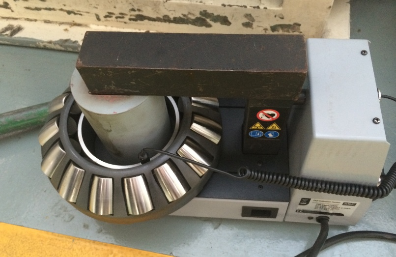
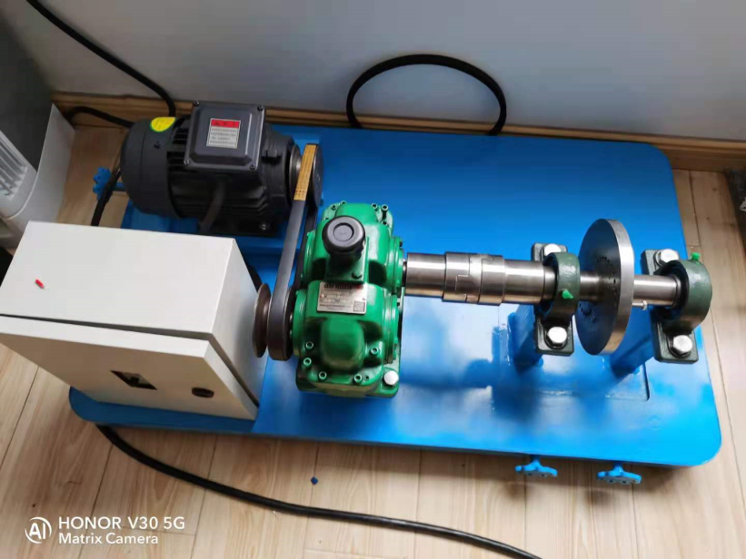
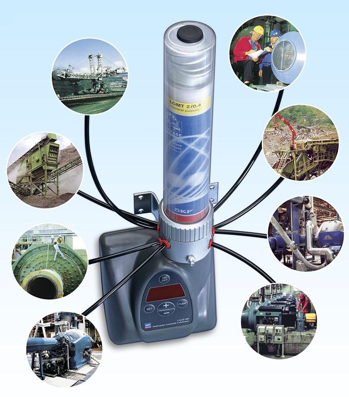
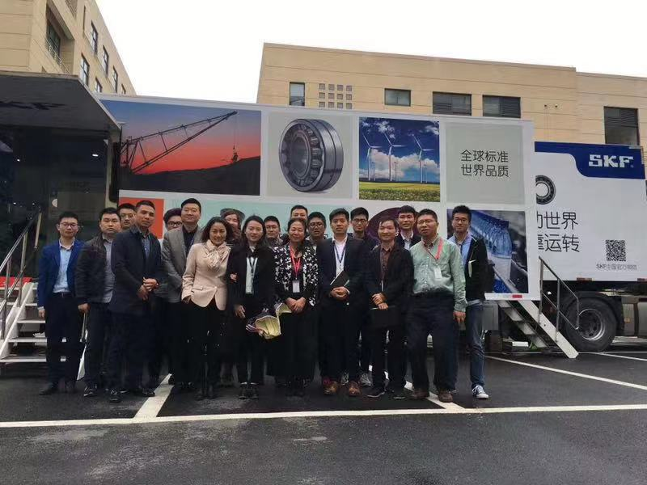
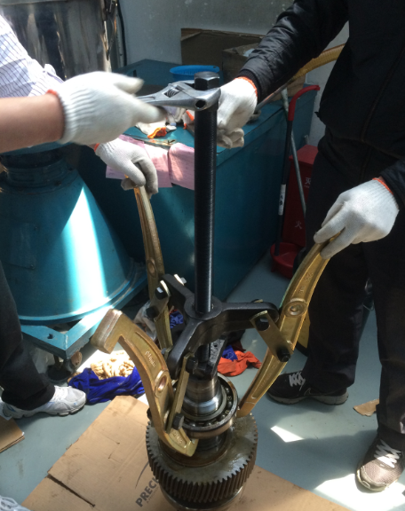
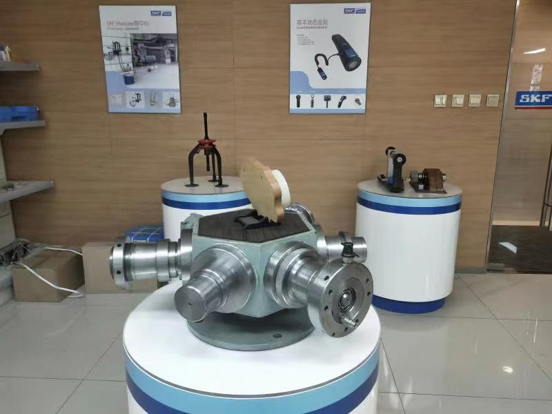

从选型到失效分析，六项核心能力把"装得对、用得好、坏了能修、状态能看"串起来——避免人为损伤与不当维护成为故障起点。
不同工况下的选型被简化、批次来源说不清、紧急采购来不及——这三条一旦同时出现，停产风险就来了。
用 SKF 官方技术接口确认型号；每批货可扫码追溯来源；本地仓库常备，紧急件有快速通道。
一份明确的选型确认单 + 完整批次证明 + 紧急件响应联系人。

关键件识别 → 库存分级 → 快速领用 → 自动记录 → 补货复盘
敲击、火焰加热、游隙凭手感——这些都是轴承早期失效的隐形推手，出了问题还很难归责。
感应加热器、液压工具、规范化的对中、扭矩与游隙控制，每一步留记录。
安装记录卡、关键验收数据、可追溯的施工档案。

感应加热器、液压工具、对中、扭矩控制规范作业
"多加、少加、错加"是轴承润滑失效的三大常见病——而其中任何一个都足以让一台关键设备提前退役。
润滑点盘点 → 选脂 → 用量与周期 → 自动润滑方案 → 污染控制。
润滑点合规率报表、用脂清单、异常点处置建议——让润滑作业可量化、可复盘。

润滑点盘点 → 选脂 → 用量与周期 → 自动润滑方案
故障总是"突然发生"，事后才知；缺乏预警，就谈不上计划检修，更谈不上避免连带损失。
离线/在线振动、温度、噪声采集 → 分析 → 报告与建议 → 复检闭环。
趋势图、诊断报告、风险等级与建议清单——让检修从"被动抢修"变成"主动安排"。

振动 · 温度 · 噪声采集 → 分析 → 报告与建议 → 复检闭环
备件不足导致停机，过度备货又占资金；领用谁拿了、什么时候拿的，往往没人能说清。
在您工厂部署智能货柜 → 扫码领用 → 后台自动记录 → 触发补货提醒。
月度领用报表、缺件预警、补货建议——把备件资金占用降到合理水位。

现场部署 · 扫码领用 · 后台自动记录 · 触发补货
设备再好，团队不会用也白搭；培训资料零散、上完课就忘，效果很难量化。
针对您的团队开设选型、安装、润滑、监测的专项培训 + 现场实操 + 考核复盘。
培训材料包、作业标准 SOP、考核记录与持续复盘——把方法留在您的团队里。

针对客户团队的选型/安装/润滑/监测专项培训与现场实操